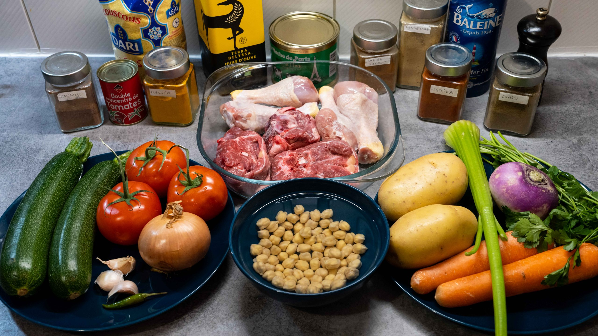
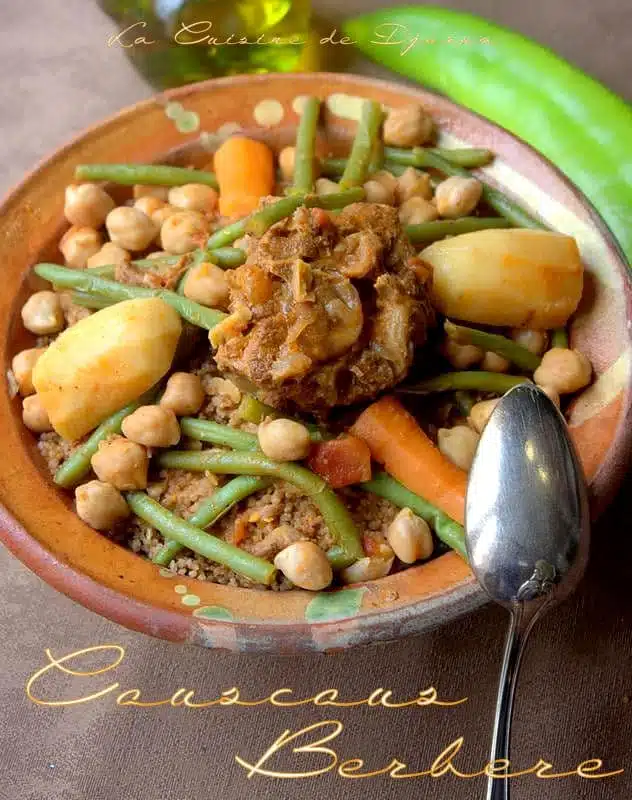

Les ingrédients
- 500 g de semoule de couscous
- 500 g de viande
- 2 carottes
- 2 courgettes
- 2 navets
- 1 oignon
- 2 tomates
- Des pois chiches
- De l'huile et des épices

Les ustensiles
- Un couscoussier
- Une cocotte
- Un couteau
- Une planche à découper
- Une grande assiette

La préparation
- Fais revenir la viande dans un peu d'huile.
- Ajoute l'oignon, les tomates et les épices.
- Ajoute de l'eau, les carottes, les navets et les pois chiches.
- Ajoute les courgettes et laisse cuire.
- Prépare la semoule selon les instructions du paquet.
- Sers la semoule avec la viande, les légumes et la sauce.
